README에서 시스템과 준비할 도구 확인하기
프로젝트 README를 엽니다. README는 프로젝트의 소개와 실행 방법을 담은 첫 안내문입니다. 프로젝트 구성에서 설비의 값을 모으는 프로그램, 지식을 보관하는 프로그램, 판단과 승인을 처리하는 프로그램이 함께 쓰이는 것을 확인하세요.
실행 환경으로 내려가 프로그램별 역할과 설치 기준을 확인합니다. 설치 기준과 다운로드 주소는 이 README에서 확인하세요.
이미 설치한 프로그램은 버전을 먼저 확인합니다. 기준 이상이면 그대로 사용하고, 없거나 기준보다 낮은 프로그램만 설치·업데이트한 뒤 다시 확인하세요. 아래 단계는 Windows에서 준비하는 순서입니다. Mac의 설치와 실행 방법은 같은 README의 macOS 안내를 사용합니다.
| 도구 | 어디에 쓰나 |
|---|---|
| Python | 프로젝트의 준비 코드와 직접 만들 프로그램을 실행합니다. |
| Node.js | 업무 데이터베이스를 준비하는 도구 등을 실행합니다. |
| Git | 프로젝트를 내 컴퓨터로 받고 이후 새 판을 받습니다. Windows에서는 Git Bash도 함께 사용합니다. |
| VS Code | 파일을 열고, AI와 대화하고, 터미널에서 명령을 실행합니다. |
| WSL | Windows에서 Docker가 Linux 프로그램을 실행할 기반을 제공합니다. |
| Docker Desktop | 여러 서비스를 준비된 구성대로 함께 실행합니다. |

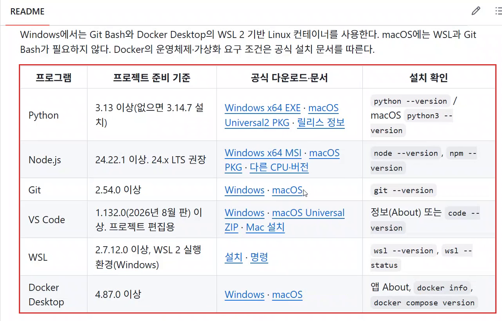
확인: 파일을 다루는 VS Code, 프로젝트를 받는 Git, 여러 서비스를 실행하는 Docker의 역할을 구분할 수 있습니다.
Python 설치하고 실행 확인하기
README의 Python 공식 설치 링크에서 Windows 설치 파일을 받습니다. 설치 창의 Add python.exe to PATH를 확인한 뒤 설치를 진행하세요. PATH는 터미널에서 프로그램 이름만 입력해도 찾을 수 있게 하는 설정입니다.

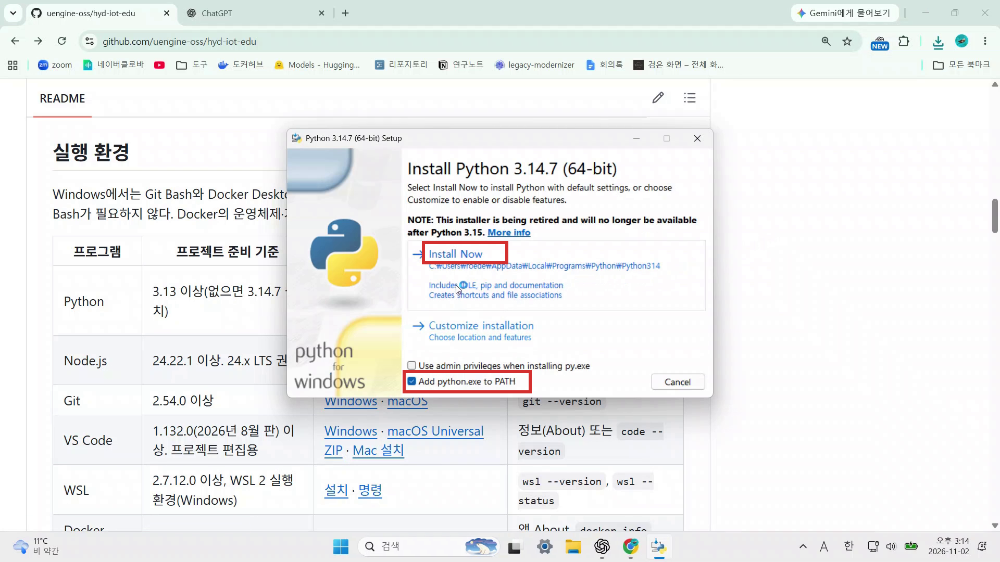
설치가 끝나면 새 PowerShell 창을 열고 아래 명령을 실행합니다. 명령은 직접 옮겨 적기보다 복사해 붙여넣으세요. 이 단계의 명령은 어느 폴더에서 실행해도 됩니다.
python --version

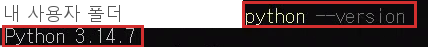
확인: Python 버전이 표시되고 README의 설치 기준 이상입니다. 명령을 찾지 못하면 설치 때 PATH 추가를 선택했는지 확인하고 터미널을 새로 여세요.
Node.js 설치하고 실행 확인하기
README의 Node.js 공식 설치 링크에서 Windows 설치 파일을 받습니다. 설치 위치와 구성은 기본값으로 진행합니다. Tools for Native Modules의 추가 도구 자동 설치 항목은 선택하지 않고 Install을 누릅니다. Windows가 권한을 묻는 창을 띄우면 예를 누르세요. 이 창은 화면 녹화에 찍히지 않아 사진과 영상에 나오지 않습니다. 뒤의 설치와 관리자 PowerShell에서도 같은 창이 나오면 예를 누릅니다.

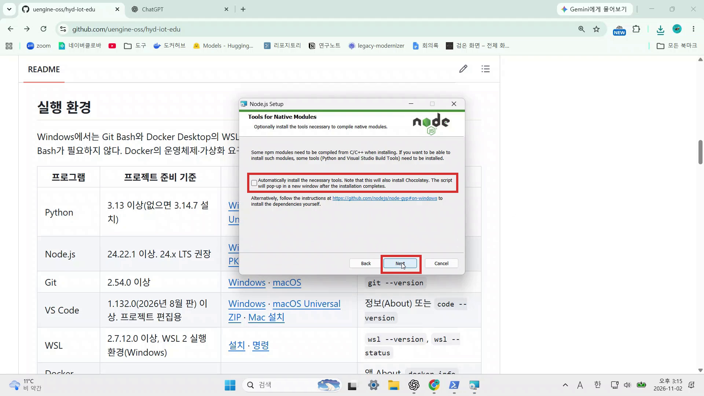
Windows 시작을 누르고 PowerShell을 검색해 Windows PowerShell을 엽니다. 이미 열려 있던 창에서 명령을 찾지 못할 때도 새 창에서 다시 확인하세요. 새 창은 설치하며 추가된 경로를 읽습니다. 어느 폴더에서든 다음 명령을 실행할 수 있습니다.

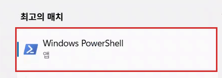
node --version

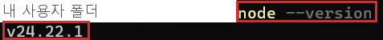
확인: Node.js 버전이 표시되고 README의 설치 기준 이상입니다.
Git 설치하고 Git Bash 열기
README의 Git 공식 링크에서 Windows 설치 파일을 받습니다. 설치 중 명령 프롬프트와 다른 프로그램에서도 Git을 사용할 수 있는 권장 PATH 선택을 유지하세요. 설치가 끝나면 Launch Git Bash를 선택하고 Finish를 눌러 Git Bash를 엽니다.

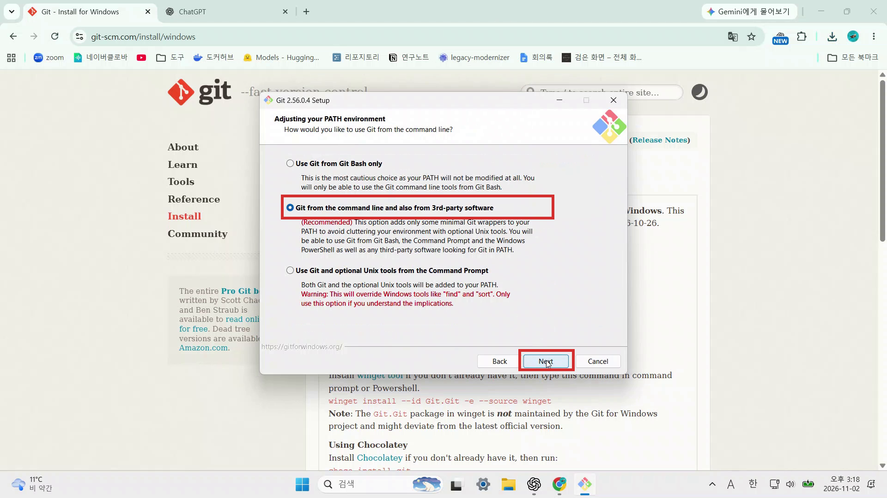

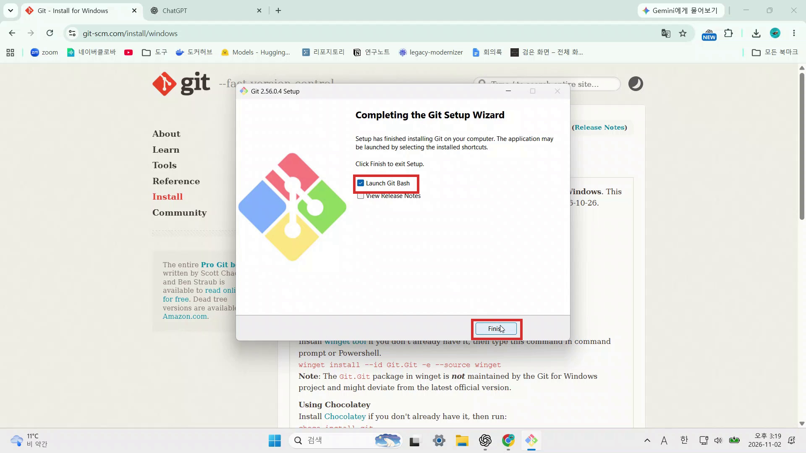
새 Git Bash의 어느 폴더에서든 다음 명령을 실행합니다.
git --version

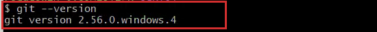
확인: Git Bash에서 Git 버전을 확인합니다. 프로젝트를 받는 명령과 시작 명령은 뒤에서 Git Bash로 실행합니다.
VS Code 설치하기
README의 VS Code 공식 링크에서 Windows User Installer를 받습니다. 설치 중 Add to PATH를 유지하고 설치를 마칩니다. WSL과 Docker까지 준비한 뒤 VS Code를 엽니다.

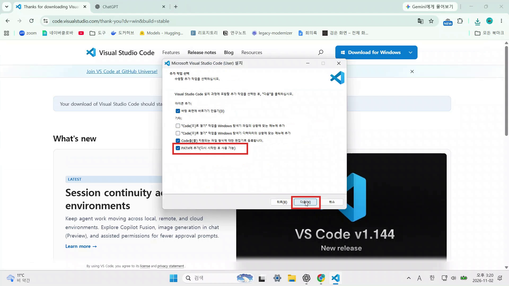
확인: 설치 완료 창을 닫으면 시작 메뉴에서 VS Code를 열 수 있습니다.
WSL 준비하기
Windows의 PowerShell에서 다음 명령을 실행합니다. 어느 폴더에서 실행해도 됩니다.
wsl --version
버전이 표시되면 README의 기준과 비교하세요. 아무 키나 누르라는 안내가 나타나면 60초 안에 Enter를 누르고 설치가 끝날 때까지 기다립니다.

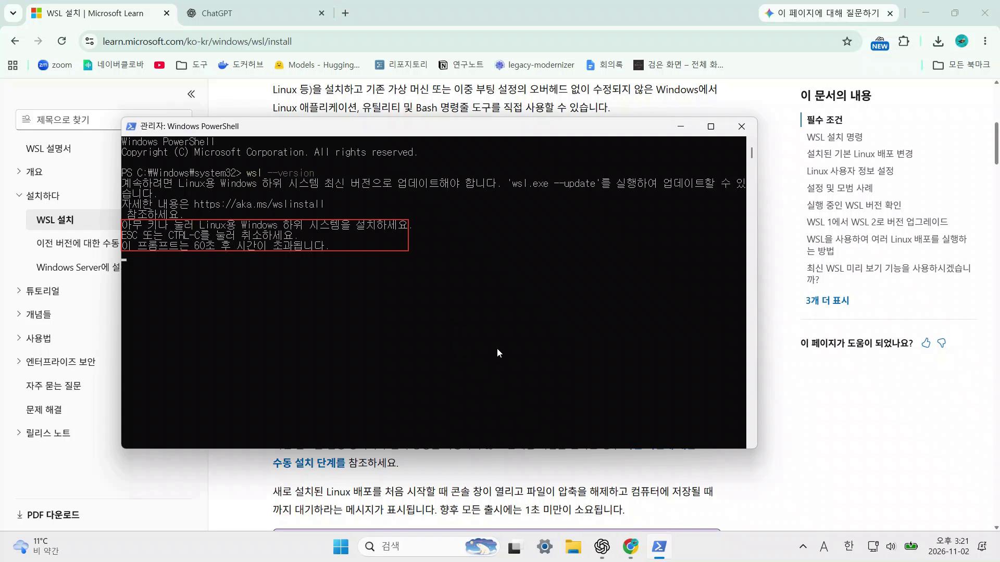
설치 안내 없이 WSL이 없다는 오류가 나오면 관리자 PowerShell에서 다음 명령을 실행합니다.
wsl --install --no-distribution
기존 WSL을 업데이트해야 할 때는 다음 명령을 사용합니다.
wsl --update

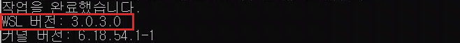
요청된 재부팅을 마친 뒤 버전을 다시 확인합니다. 별도 Ubuntu 배포판은 준비하지 않습니다. 프로젝트 명령은 Windows의 Git Bash에서 실행하고, Docker는 자체 Linux 실행 환경을 사용하기 때문입니다.
확인: WSL 버전이 표시되고 README의 기준 이상입니다.
Docker Desktop 설치하고 저장소 주소 복사하기
README의 Docker Desktop 공식 링크에서 Windows 설치 파일을 받습니다. 설치 창에 WSL 2 선택 항목이 있으면 선택을 유지하고 OK를 누릅니다.

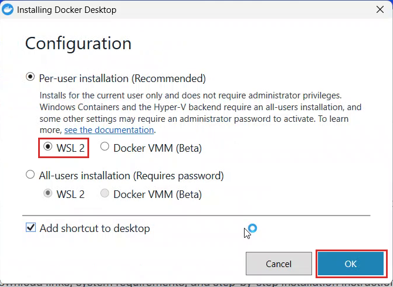
설치를 마치면 아래 성공 화면이 나타납니다. 엔진 실행 상태는 프로젝트를 시작하기 전에 확인합니다.

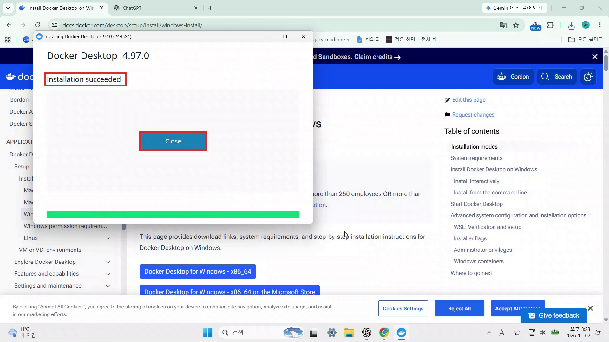
프로젝트 GitHub 페이지로 돌아갑니다. 파일 목록 위의 Code → HTTPS에서 주소 오른쪽 복사 버튼을 누르세요. 이 주소가 뒤에서 실행할 clone 명령에 들어 있는 저장소 주소입니다.

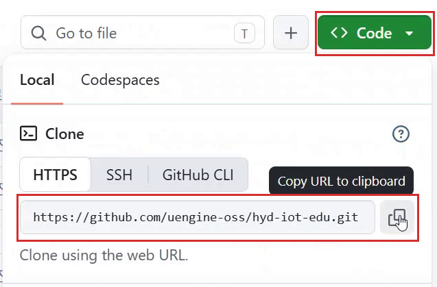
VS Code에 한국어 팩과 Codex 설치하기
VS Code를 처음 실행하면 로그인 창이 뜹니다. Continue without Signing In으로 넘어가세요.

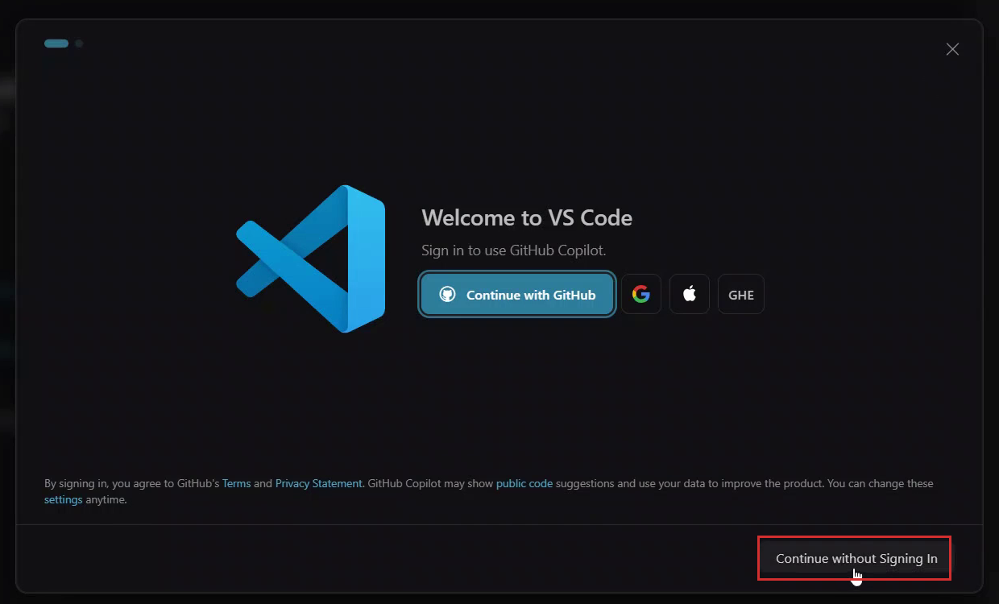
이어지는 테마 창은 그대로 두고 Get Started를 누릅니다.

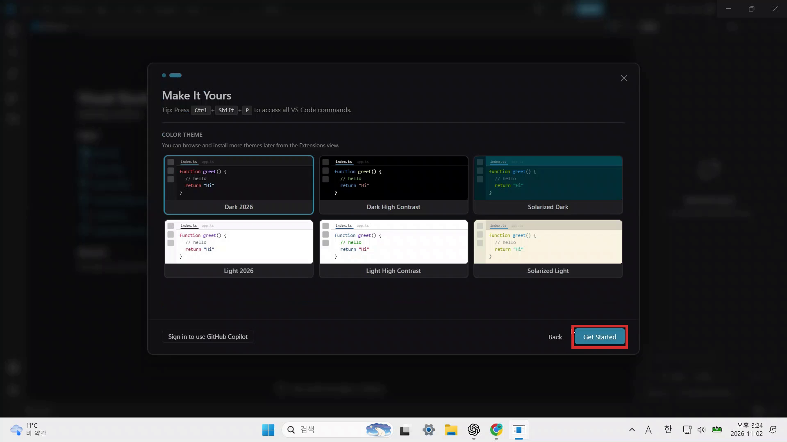
VS Code 왼쪽의 확장 아이콘(Extensions)을 눌러 Korean Language Pack for Visual Studio Code를 검색합니다. 게시자가 Microsoft인지 보고 설치하세요.

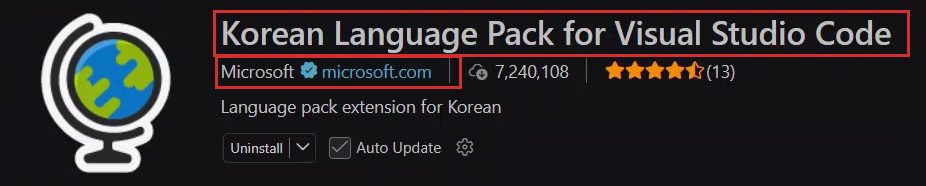
같은 검색칸에서 Codex를 찾아 게시자가 OpenAI인 확장을 설치합니다. 확장이 설치되면 오른쪽 패널에 Codex 탭이 생깁니다. 계정 연결은 작업할 폴더를 연 뒤 진행합니다.

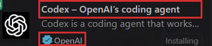
오른쪽 아래의 Change Language and Restart를 누르거나 명령 팔레트에서 Configure Display Language를 열어 한국어를 선택합니다. 다시 시작을 묻는 창에서 Restart를 누르세요.

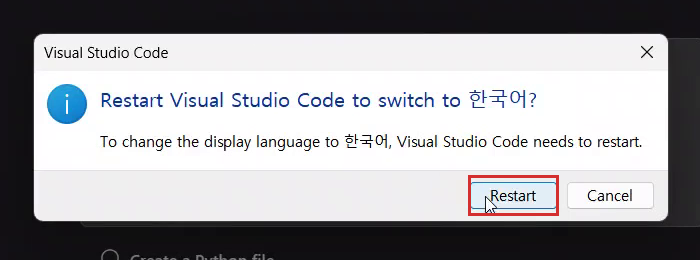
재시작 뒤 파일과 터미널 메뉴가 한국어로 보이면 됩니다.
작업 폴더에서 프로젝트 받기
VS Code 시작 화면의 폴더 열기 또는 파일 → 폴더 열기를 누릅니다.

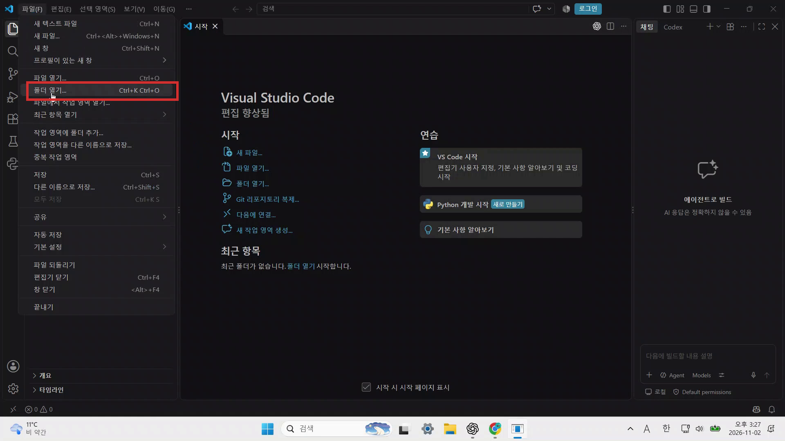
자신의 파일을 보관할 수 있는 위치에 작업 폴더를 만들어 폴더 선택을 누르세요. 화면에서는 C 드라이브에 만든 study 폴더를 사용합니다.

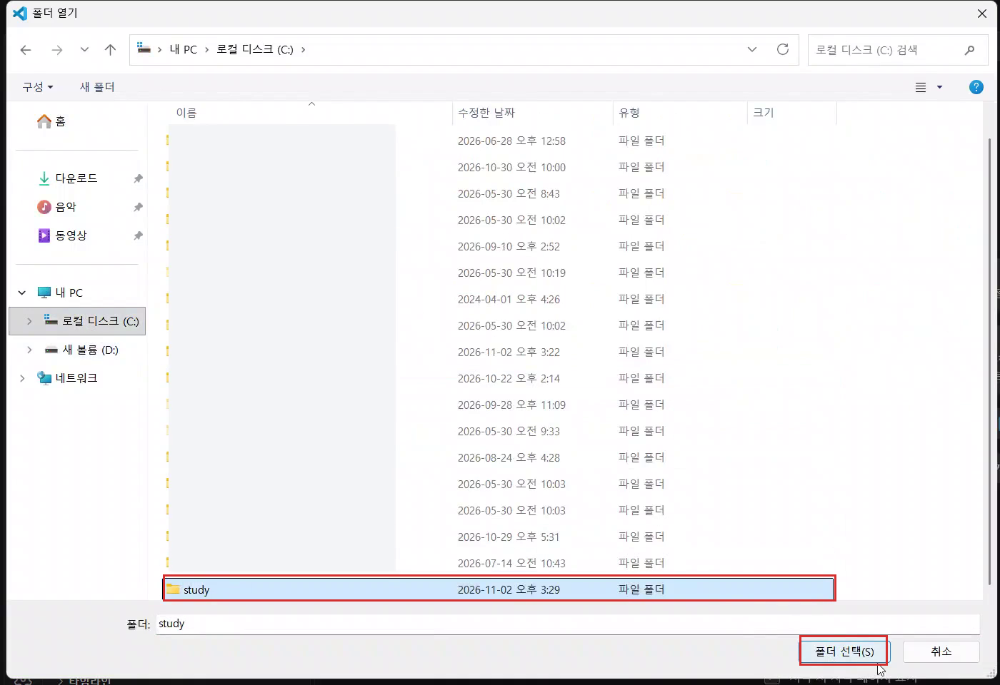
폴더를 신뢰할지 묻는 창(Do you trust the authors of the files in this folder?)이 나타나면, 방금 직접 고른 작업 폴더를 연 것인지 확인한 뒤 왼쪽 파란 단추 Yes, I trust the authors를 누르세요. 신뢰하지 않으면 VS Code가 제한 모드로 열려 AI 도구가 동작하지 않습니다. 창이 나타나지 않으면 그대로 다음으로 갑니다.

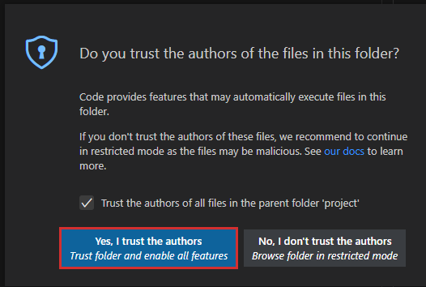
No, I don't trust the authors를 눌렀거나, 위에 제한 모드 안내 줄이 보이고 왼쪽 아래 상태 줄에 Restricted Mode가 보이면 그 Restricted Mode를 누르세요.

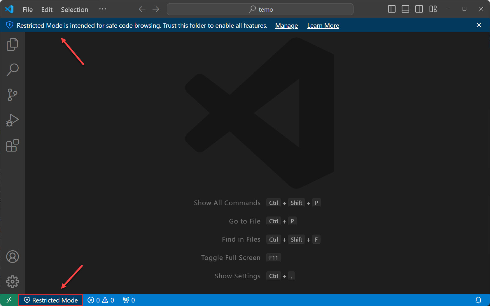
열린 Workspace Trust 화면의 왼쪽 칸에서 Trust를 누르면 제한 모드가 풀립니다.

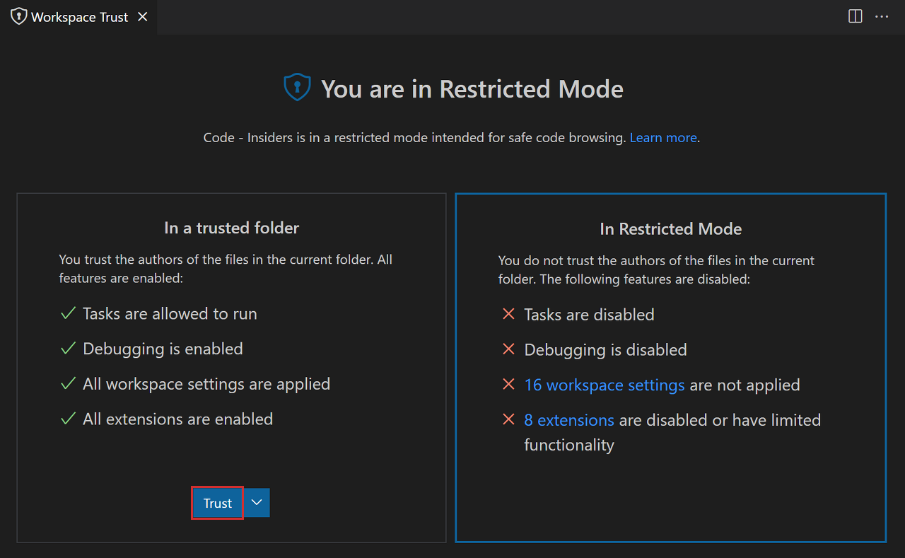
터미널 → 새 터미널을 엽니다.

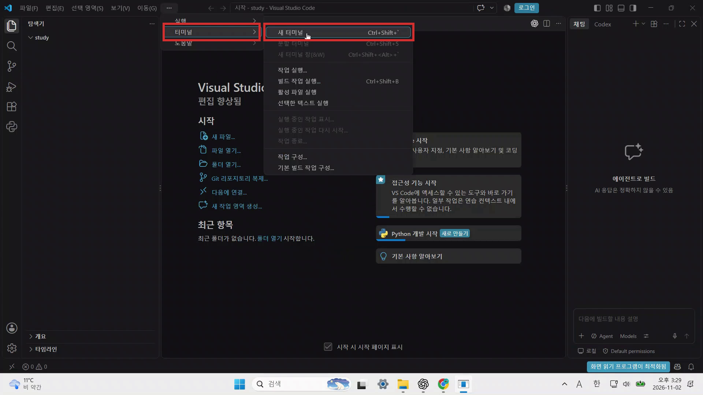
터미널 위쪽의 새 터미널 옆 화살표 → Git Bash를 선택합니다.

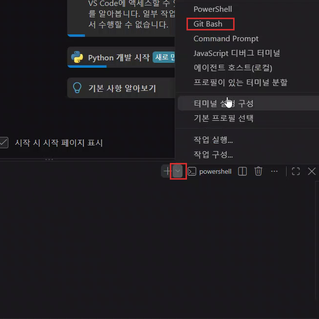
작업 폴더의 Git Bash에 아래 명령을 넣고 Enter를 누르세요. README에 적힌 명령과 같고, 수업에 쓰는 지금 판만 받습니다.
git clone --depth 1 https://github.com/uengine-oss/hyd-iot-edu.git

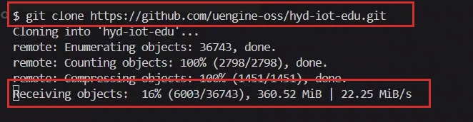
Receiving objects의 수신 비율이 올라갑니다. 사진의 명령에는 --depth 1이 없어 받는 양이 더 많고, 여러분은 이보다 빨리 끝납니다. 터미널은 열린 채로 두고 Codex를 연결하세요.
Codex 연결과 저장소 수신 결과 확인하기
오른쪽 패널의 Codex 탭을 엽니다. 처음 나오는 안내 화면은 다음으로 넘어갑니다.

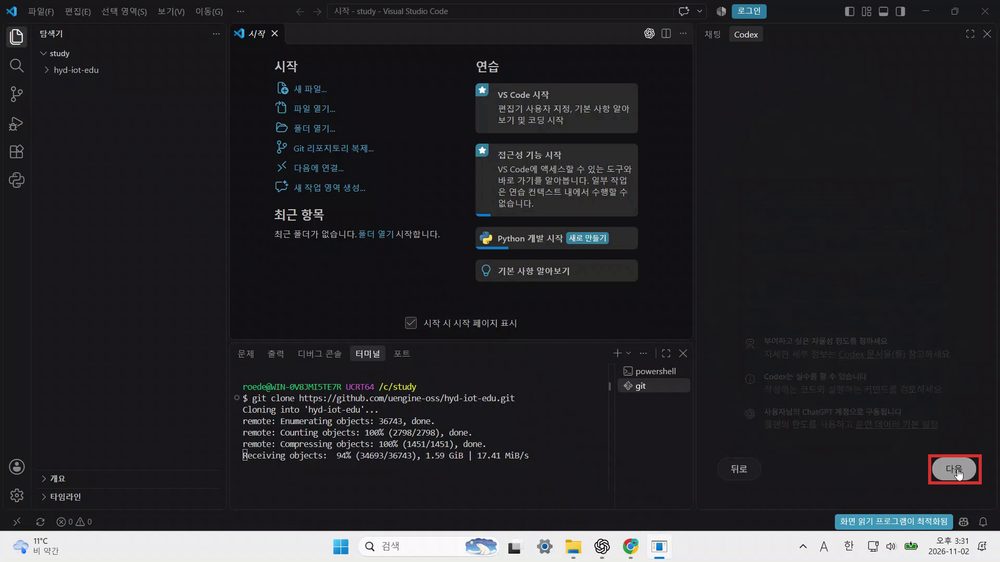
모델 안내는 현재 모델로 계속 진행을 누르세요.

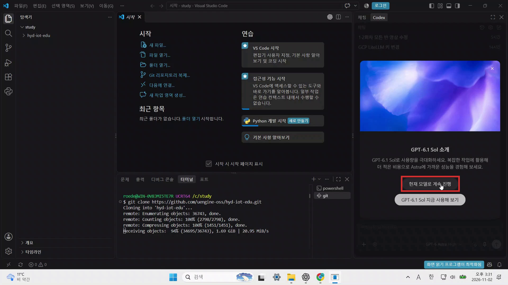
ChatGPT로 로그인을 누르면 브라우저가 열립니다. 사진처럼 Welcome back 화면이 나오면 본인 계정을 누르세요. 처음 로그인하는 브라우저라면 본인 계정 정보를 넣는 화면이 먼저 나옵니다.

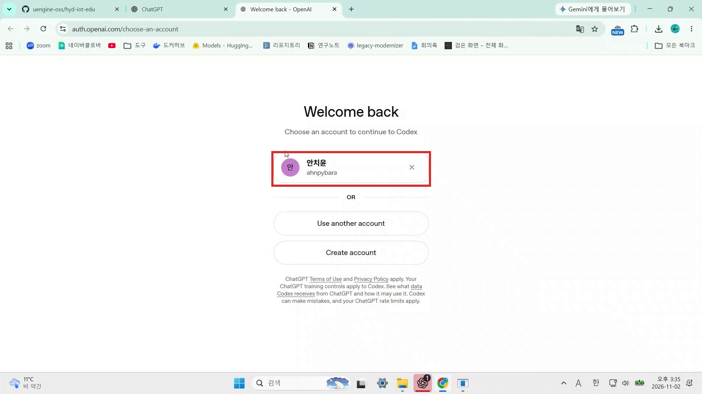
Select a workspace에서 Continue를 누릅니다.

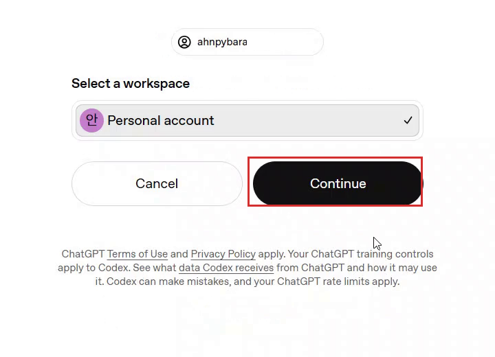
Signed in to Codex가 보이면 로그인이 끝난 것입니다. 전화번호 확인이 나타나면 본인 화면에서 마치고, 작업 폴더가 열린 VS Code로 돌아옵니다. 계정 정보는 터미널이나 채팅에 붙여넣지 마세요.

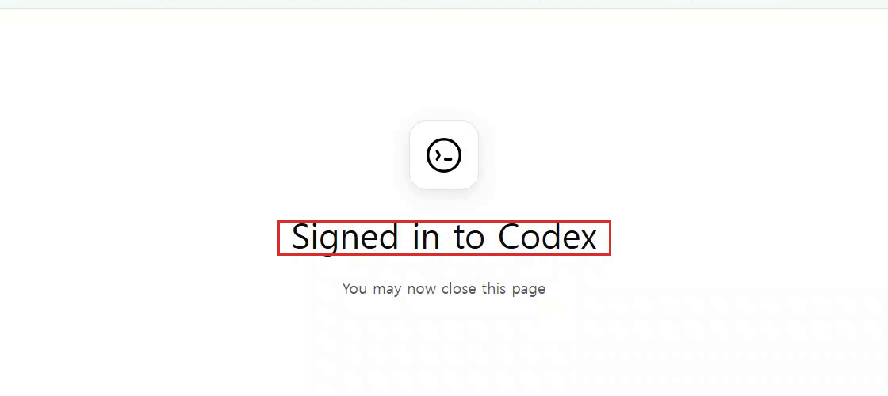
옆의 채팅 탭은 GitHub Copilot입니다. README대로 본인 GitHub 계정을 연결하면 실습에서 함께 쓸 수 있습니다.
오른쪽 Codex 입력칸에 다음 인사를 넣고 전송하세요.
안녕

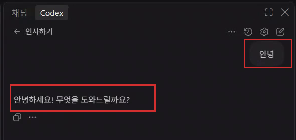
인사를 보낸 뒤 응답이 끝나면 같은 패널에서 인사에 대한 답을 확인합니다. 왼쪽 탐색기에는 받은 hyd-iot-edu 폴더가 생깁니다. 아래 터미널의 Receiving objects: 100%와 Resolving deltas: 100%, 다시 나타난 입력 표시를 확인하세요.

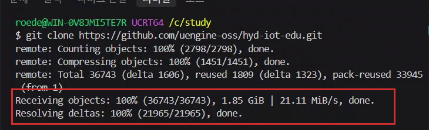
명령 한 번으로 시스템 시작하기
바탕 화면이나 시작 메뉴에서 Docker Desktop을 엽니다. 첫 실행 때 Docker Subscription Service Agreement가 나타나면 사용 조건을 읽어 보세요. 동의하고 계속하려면 Accept를 누릅니다. 이미 수락한 컴퓨터는 다음 화면으로 넘어갈 수 있습니다.

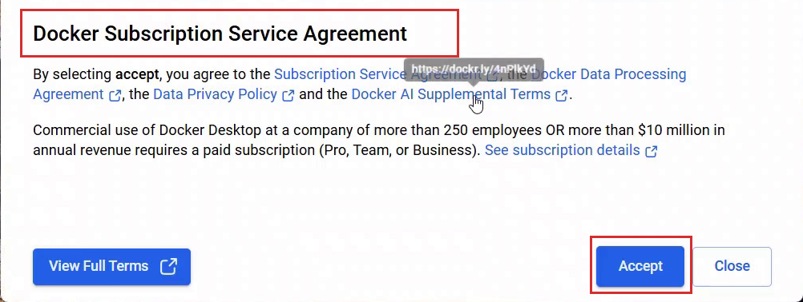
Welcome to Docker에서 로그인을 생략하고 로컬 엔진을 실행하려면 오른쪽 위 Skip을 누르세요.

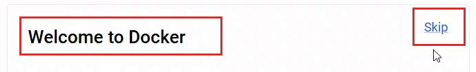
엔진이 시작되는 동안 창을 그대로 둡니다. 왼쪽 아래에 Engine running이 나타나면 컨테이너를 실행할 준비가 된 것입니다.

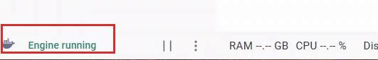
왼쪽 Settings를 누르고 General에서 Choose Virtual Machine Manager (VMM)의 값이 WSL 2인지 확인하세요.

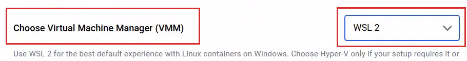
VS Code로 돌아와 작업 폴더의 Git Bash에서 프로젝트 폴더로 이동합니다.
cd hyd-iot-edu

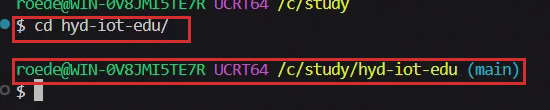
현재 위치가 프로젝트 루트인지 확인한 뒤 실행하세요.
bash scripts/start_all.sh

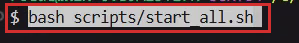
처음에는 서비스마다 필요한 이미지를 받아 파일을 풀고 컨테이너를 시작합니다. Pulling 또는 Downloading 옆의 받은 양이 변하거나 다음 단계 번호가 나타나면 그대로 기다리세요. 명령을 다시 입력할 필요가 없습니다. Started는 컨테이너를 시작했다는 표시입니다. 3/8 단계에서 WARN: config section [inbucket] is deprecated처럼 빨간 줄이 보여도 멈춘 것이 아니니 그대로 기다리세요. 마지막 점검을 지나 완료 줄까지 나오는지 확인하세요.

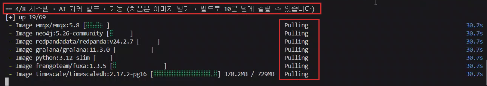
VS Code 터미널의 완료. 포털 줄에서 이번 실행의 주소를 찾습니다. 주소 위에 마우스를 놓고 Ctrl을 누른 채 주소를 클릭하세요. 기본 포트가 다른 프로그램과 겹쳤다면 출력된 포트 번호를 사용합니다.

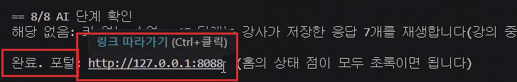
새 브라우저 탭에서 본문 제목 홈과 왼쪽 작업, 설비 메뉴를 찾으세요. 앞으로 실습은 대부분 이 화면에서 합니다. 상태 카드에 값이 표시되면 포털이 열린 것입니다.

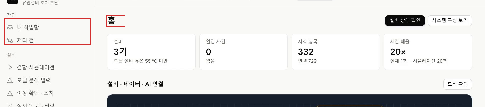
확인: 시작 결과를 확인했고, 출력된 주소로 HYD 포털을 열었습니다. 터미널에 포털은 열 수 있습니다 줄이 나오면 AI 단계만 실패한 것이니, 그 위의 실패 줄에 적힌 까닭을 고친 뒤 안내된 명령을 다시 실행합니다.
홈에서 전체 연결 확인하기
이제 메뉴를 한 바퀴 둘러봅니다. 지금 하나하나 다 이해하지 않아도 뒤에서 직접 써 보며 익히게 됩니다. 다른 화면을 보고 있다면 왼쪽 시스템 → 홈으로 돌아오세요.
위쪽 네 칸에서 설비, 열린 사건, 지식 항목, 시간 배율을 확인합니다. 지식 항목은 AI가 판단할 때 꺼내 쓰는 지식의 수이고, 시간 배율 20배는 이 설비가 실제보다 스무 배 빠르게 돌아간다는 뜻입니다. 값은 실행 상태에 따라 달라지므로 사진의 숫자와 같게 맞추는 것이 목표는 아닙니다.
설비 · 데이터 · AI 연결 그림을 왼쪽부터 읽어 보세요. 왼쪽이 현장 설비, 가운데가 데이터가 지나가는 길, 오른쪽이 지식 지도와 AI 에이전트입니다. 설비에서 나온 값이 가운데를 거쳐 AI까지 가고, 승인된 조치는 위쪽 화살표를 따라 다시 설비로 돌아갑니다.

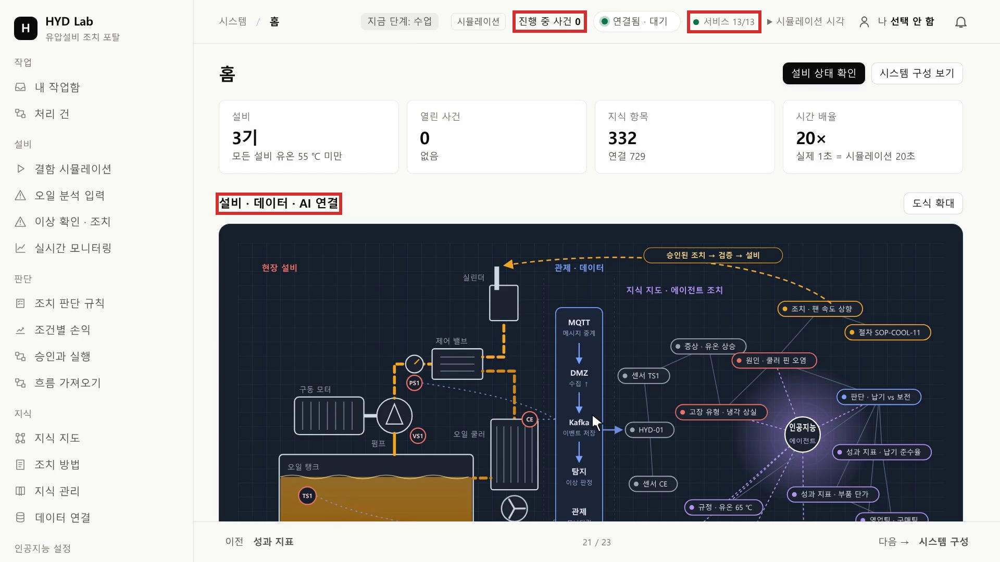
위쪽 줄 가운데에는 진행 중인 처리 건 수와 켜져 있는 서비스 수가, 오른쪽에는 지금 내가 누구로 들어와 있는지와 알림 종이 있습니다. 아직 나를 고르지 않았으면 선택 안 함으로 보입니다.

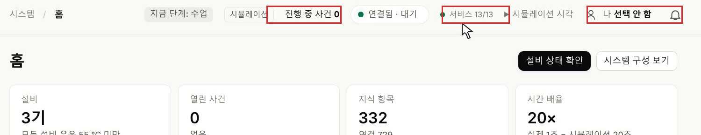
확인: 센서 값이 올라오는 방향과 승인된 조치가 설비로 돌아가는 방향을 각각 찾을 수 있습니다.
작업·설비 화면 둘러보기
왼쪽 작업 → 내 작업함을 엽니다. 나에게 돌아온 승인이나 확인이 모이는 곳입니다. 포털에는 운전원, 생산관리자, 구매 담당, 설비보전팀장처럼 여러 역할이 있어서 먼저 나를 고릅니다.

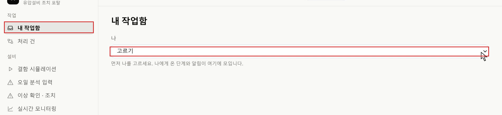
나에서 최운전 · 운전원을 고르세요. 오른쪽 위에도 같은 이름이 보이고, 브라우저가 기억해 나중에 승인할 때 승인한 사람으로 남습니다. 내 작업 탭에는 이 사람이 맡은 일이, 알림 탭에는 도착한 알림이 표시됩니다.

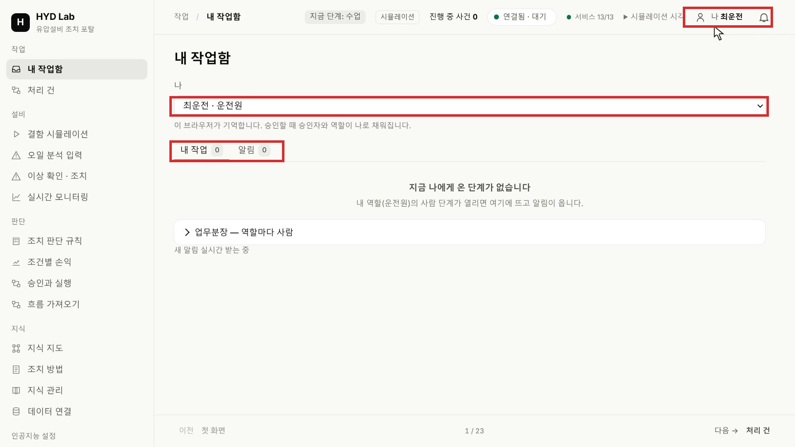
처리 건을 엽니다. 설비에 이상이 생기면 그 사건 하나를 처리하는 과정이 한 건으로 만들어집니다. 아직 사건이 없어 비어 있어도 괜찮습니다. 사건이 생기면 아래 목록에 쌓이고, 하나를 누르면 오른쪽에 AI가 어떤 근거로 무엇을 추천했는지, 누가 언제 승인했는지가 순서대로 남습니다.

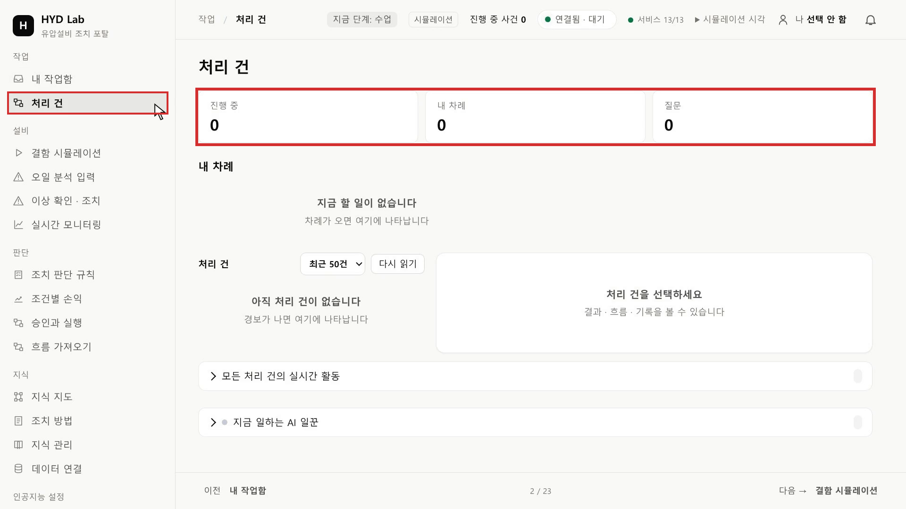
설비 → 결함 시뮬레이션에서는 설비 세 대가 카드로 나란히 있습니다. 카드에서 가장 크게 보이는 숫자가 기름 온도인 유온입니다. 유온이 오르면 설비에 무리가 가서 이 설비는 65 ℃를 넘으면 스스로 멈춥니다. 아래 막대가 그 기준까지 남은 정도를 보여 주고, 그 밑에는 냉각 효율과 팬 속도, 압력 같은 값이 있습니다. HYD-02 · HYD-03의 주황 표시는 정기 점검과 재고 보충을 알리는 업무 알림입니다.

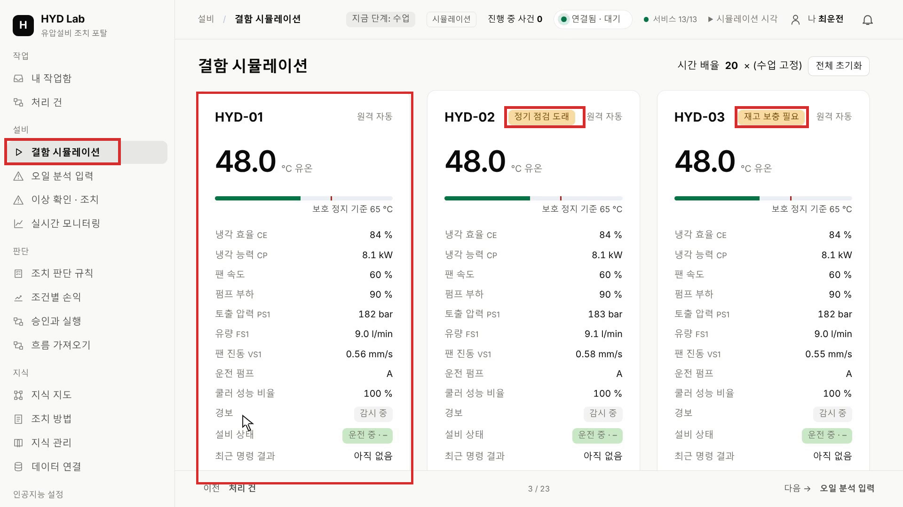
카드 아래쪽의 결함 실험 버튼이 이 화면의 핵심입니다. 첫 번째 설비의 쿨러 열화 주입은 기름을 식히는 쿨러가 점점 나빠지는 고장을 넣는 버튼입니다. 지금은 누르지 말고 위치만 봐 두세요. 다음 실습에서 눌러 처리 과정을 처음부터 따라갑니다.

오일 분석 입력은 센서로 바로 잴 수 없는 기름 상태를 사람이 검사해 넣는 화면이고, 이상 확인 · 조치는 설비 세 대의 상태를 그림으로 보여 주며 사건이 생기면 아래쪽에 원인과 조치 과정이 나타나는 화면입니다. 실시간 모니터링에서는 값이 시간에 따라 변하는 모습을 그래프로 봅니다. 유온 그래프의 위쪽 빨간 선이 65 ℃ 보호 정지 기준입니다.


확인: 사람의 할 일을 찾는 화면, 사건의 진행을 보는 화면, 설비 값을 보는 화면을 구분할 수 있습니다.
판단 화면 둘러보기
판단 → 조치 판단 규칙은 어떤 상황에서 어떤 조치를 고를지 정해 둔 규칙을 직접 돌려 보는 곳입니다. 설비와 이상 상황을 고르고 판단 실행을 누르면 규칙에 따라 조치 후보가 순서대로 나옵니다. 조건별 손익은 조건이 바뀌면 어떤 조치가 이득이고 손해인지 비교하는 화면입니다. 지금은 어떤 화면인지만 보고, 자세한 쓰임은 뒤 회차에서 배웁니다.


승인과 실행은 AI가 올린 판단을 사람이 승인하고, 그 뒤 시스템이 실행한 결과를 보는 화면입니다. 사건이 없으면 판단 결과가 비어 있고 상세에 판단을 선택하세요가 표시됩니다. AI가 아무리 좋은 조치를 찾아도 사람이 승인하기 전에는 설비에 손대지 않습니다.

아래 기업 시스템 현황에는 생산 오더의 납기처럼 조치를 고를 때 함께 따지는 회사 쪽 사정이 보입니다.

흐름 가져오기는 제공된 업무 흐름을 고쳐 포털에 등록하는 곳입니다. 업무 흐름은 뒤 회차에서 배우므로 위치만 알아 두세요.

확인: AI가 추천하는 것과 사람이 승인하는 것, 실제 명령을 실행하는 것은 서로 다른 단계입니다.
지식 화면 둘러보기
지식 → 지식 지도를 엽니다. 회사의 목표, 업무 과정, 사람과 부서, 설비의 이상과 원인, 조치 방법이 칸마다 정리되어 서로 선으로 이어져 있습니다. 설비 진단 칸에서 쿨러 성능 저하 같은 이상 상황을 찾고, 위쪽에서 항목과 연결, 조치 방법과 규칙의 수를 읽으세요. 이렇게 지식을 관계로 이어 놓은 구조를 온톨로지라고 하며, 이 과정에서 가장 중요하게 다루므로 뒤에서 자세히 배웁니다.

조치 방법에는 매뉴얼에 적힌 작업 절차가 하나씩 정리되어 있습니다. 설비를 바로 움직이는 조치도, 정비를 요청하는 조치도 있습니다. 지식 관리는 매뉴얼을 넣는 곳입니다. 파일을 고르면 AI가 내용을 읽어 절차와 지식으로 정리하고, 사람이 원문과 맞춰 확인한 다음 지식으로 넣습니다. 데이터 연결은 AI가 업무 데이터와 센서 기록을 어디서 읽어 오는지 보여 주는 곳입니다.


확인: 관계를 보는 지식 지도와 문서를 검토해 넣는 지식 관리의 역할을 구분할 수 있습니다.
인공지능 설정·성과·시스템 둘러보기
인공지능 설정은 AI 에이전트를 직접 다뤄 보는 곳들이고 대부분 뒤 회차에서 씁니다. 에이전트에게 질문은 궁금한 것을 묻는 화면으로, 질문 칸 아래의 질문 단추를 누르면 칸에 질문이 들어갑니다. 에이전트에는 맡은 일이 서로 다른 에이전트들이 있고, 도구 연결에서는 에이전트가 쓰는 도구가 어디에 연결돼 있는지 봅니다. 시험 비교는 두 에이전트에게 같은 상황을 주고 판단을 나란히 비교하는 곳, 판단 채점은 AI의 판단이 정답과 얼마나 맞는지 점수를 매기는 곳입니다.


성과 → 성과 지표에는 설비 가동률, 에너지 비용, 재고량, 납기처럼 회사가 중요하게 보는 숫자들이 모여 있습니다. AI가 조치를 고를 때도 이 숫자들의 득실을 따집니다. 시스템 → 시스템 구성은 시스템을 이루는 프로그램 목록이고, 관리는 지난 기록을 다시 처리하거나 설정을 처음 상태로 되돌릴 때 쓰는 화면입니다.


확인: 작업·설비·판단·지식·인공지능 설정·성과·시스템의 일곱 묶음을 모두 열었고, 어떤 일을 어디에서 하는지 찾을 수 있습니다. 메뉴가 많아 보여도 처음에는 설비에 고장을 내고, 사건이 처리되는 과정을 보고, 승인하는 흐름만 잡으면 됩니다.
실습을 이어가는 동안 시스템을 켜 둡니다. 수업을 모두 마친 뒤 끄거나 새 판을 받는 방법은 프로젝트 README의 실행 파일에 있는 setup 폴더 안내에서 확인할 수 있습니다.